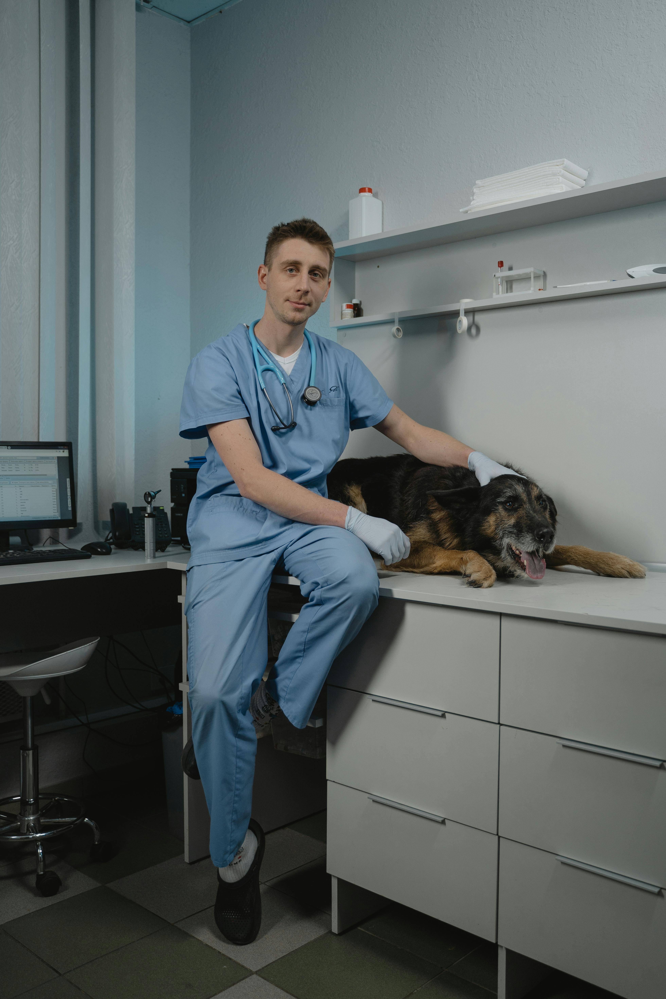

Equipo Veterinario

- Dr. Alejandro Gómez - Cirugía ortopédica - 10 años de experiencia.

- Dr. Ricardo Hernández - Dermatología veterinaria - 5 años de experiencia.

- Dra. Isabel Fernández - Oncología veterinaria - 15 años de experiencia.
Equipo Zootecnia
- Ing. Patricia Ramírez - Bienestar animal - 8 años de experiencia.

- Ing. Fernando López - Genética y mejoramiento animal - 5 años de experiencia.
- Ing. Mariana Díaz - Tecnología de alimentos de origen animal - 10 años de experiencia.